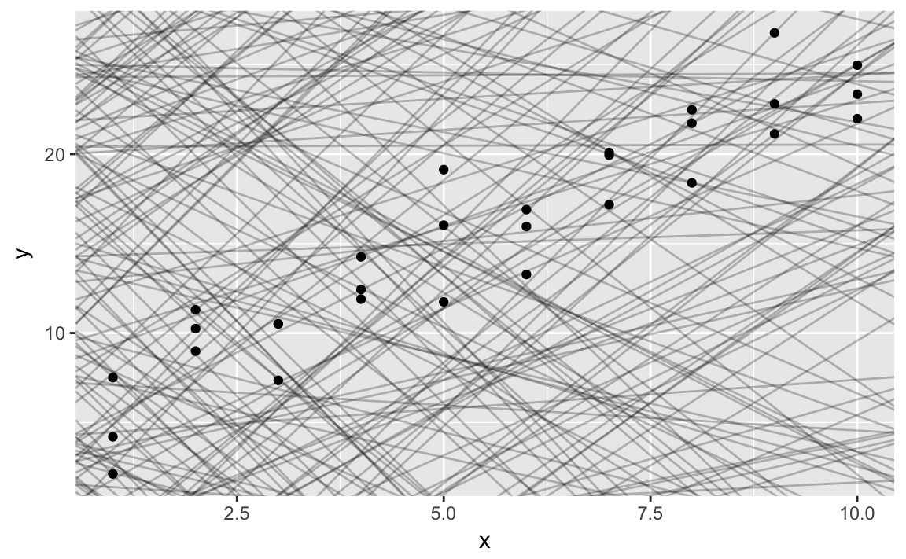
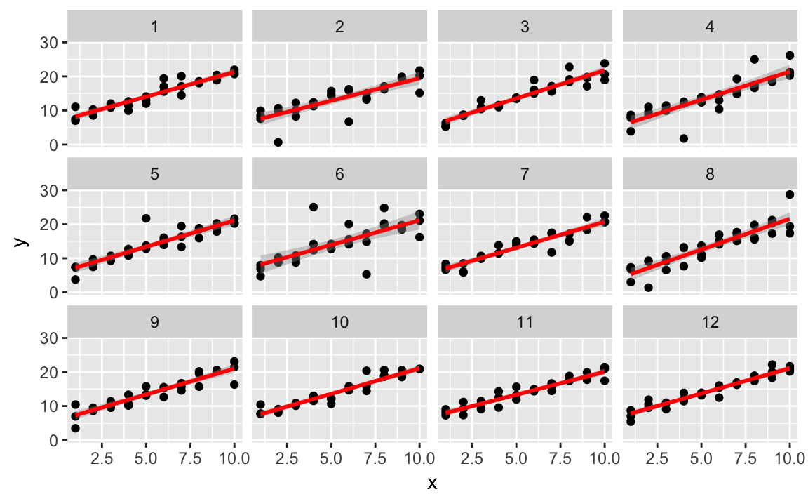
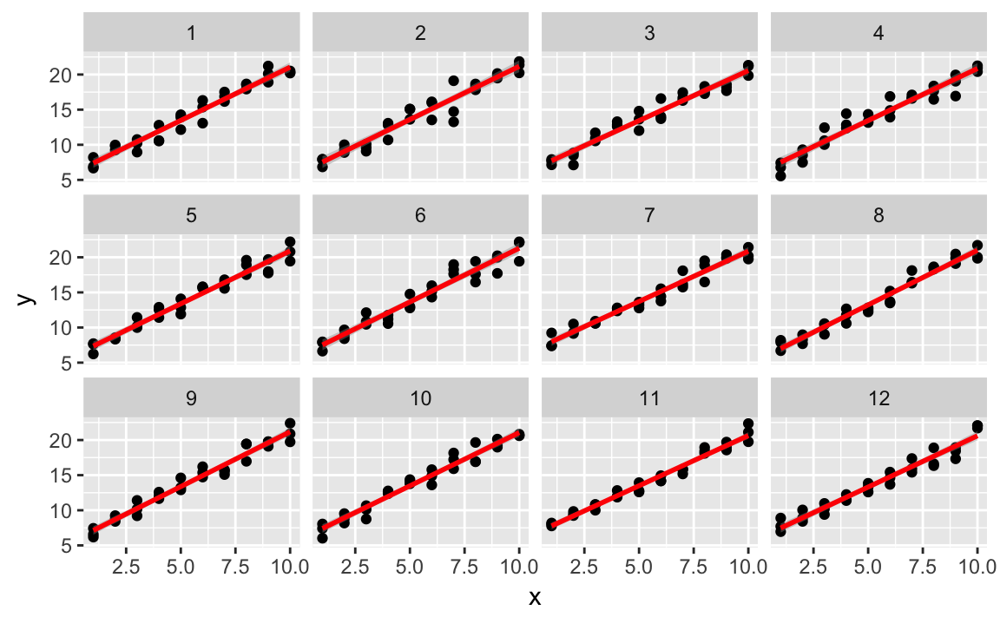
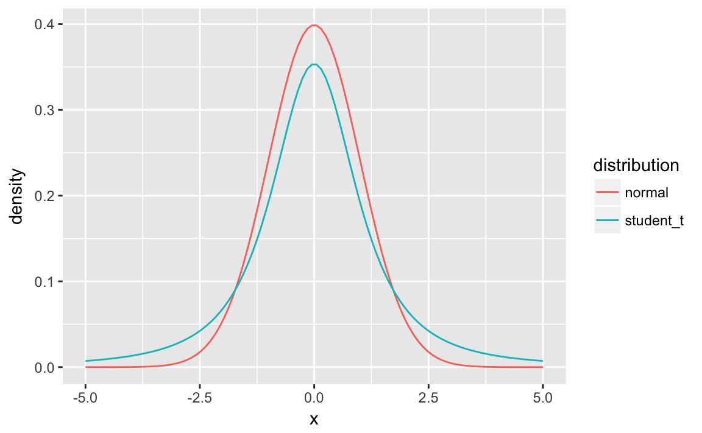
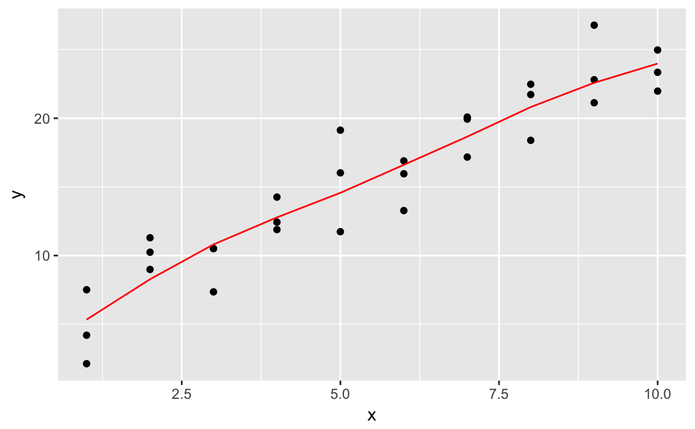
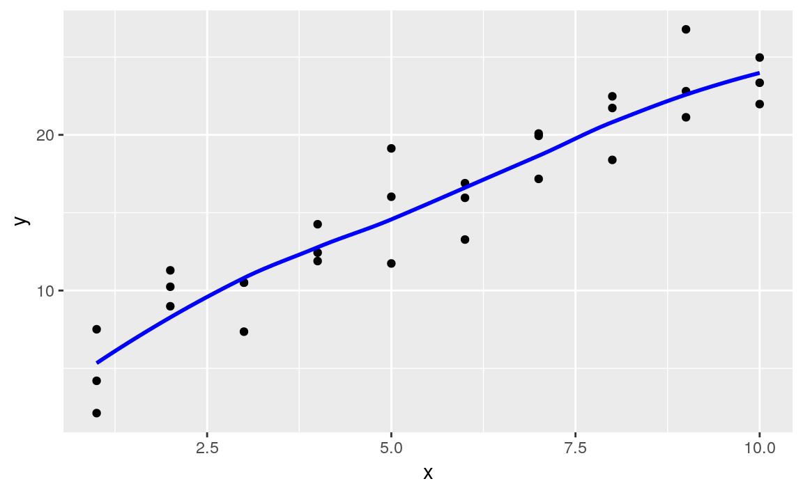
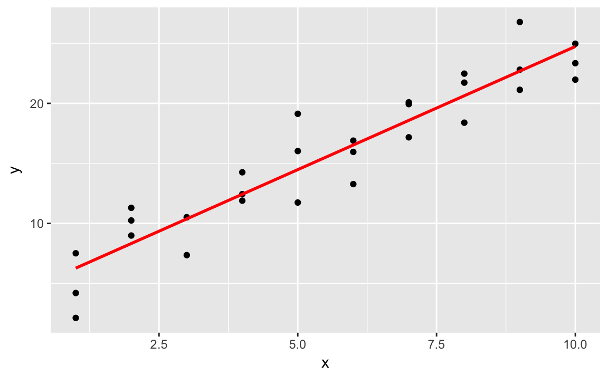
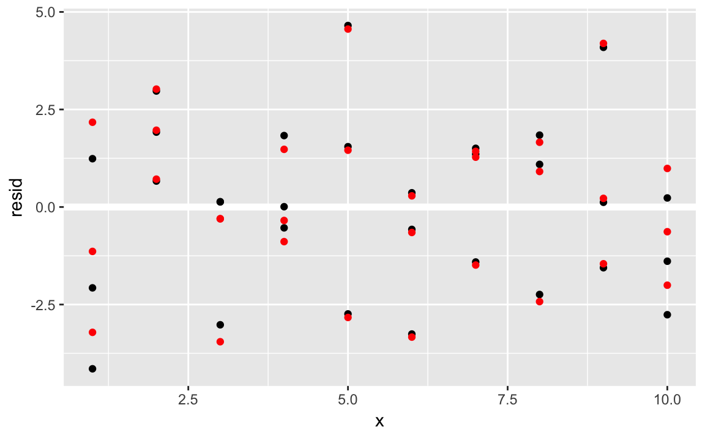
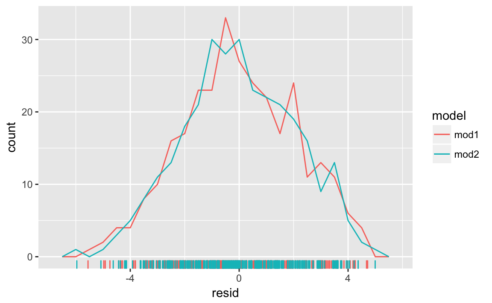
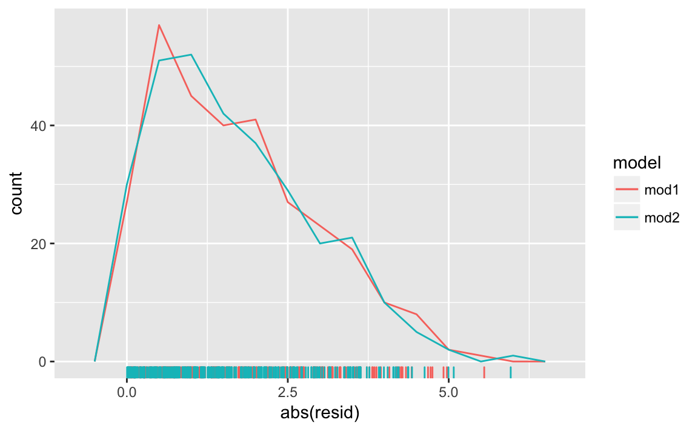

23 Model basics
23.1 Prerequisites
The option na.action determines how missing values are handled.
It is a function.
na.warn sets it so that there is a warning if there are any missing values.
If it is not set (the default), R will silently drop them.
23.2 A simple model
Exercise 23.2.1
One downside of the linear model is that it is sensitive to unusual values because the distance incorporates a squared term. Fit a linear model to the simulated data below, and visualize the results. Rerun a few times to generate different simulated datasets. What do you notice about the model?
Let’s run it once and plot the results:
 We can also do this more systematically, by generating several simulations and plotting the line.
simt <- function(i) {
tibble(
x = rep(1:10, each = 3),
y = x * 1.5 + 6 + rt(length(x), df = 2),
.id = i
)
}
sims <- map_df(1:12, simt)
ggplot(sims, aes(x = x, y = y)) +
geom_point() +
geom_smooth(method = "lm", colour = "red") +
facet_wrap(~ .id, ncol = 4)
What if we did the same things with normal distributions?
sim_norm <- function(i) {
tibble(
x = rep(1:10, each = 3),
y = x * 1.5 + 6 + rnorm(length(x)),
.id = i
)
}
simdf_norm <- map_df(1:12, sim_norm)
ggplot(simdf_norm, aes(x = x, y = y)) +
geom_point() +
geom_smooth(method = "lm", colour = "red") +
facet_wrap(~ .id, ncol = 4) There are not large outliers, and the slopes are more similar.
The reason for this is that the Student’s \(t\)-distribution, from which we sample with rt() has heavier tails than the normal distribution (rnorm()). This means that the Student’s t-distribution
assigns a larger probability to values further from the center of the distribution.
tibble(
x = seq(-5, 5, length.out = 100),
normal = dnorm(x),
student_t = dt(x, df = 2)
) %>%
gather(distribution, density, -x) %>%
ggplot(aes(x = x, y = density, colour = distribution)) +
geom_line()
For a normal distribution with mean zero and standard deviation one, the probability of being greater than 2 is,
For a Student’s \(t\) distribution with degrees of freedom = 2, it is more than 3 times higher,
Exercise 23.2.2
One way to make linear models more robust is to use a different distance measure. For example, instead of root-mean-squared distance, you could use mean-absolute distance:
measure_distance <- function(mod, data) {
diff <- data$y - make_prediction(mod, data)
mean(abs(diff))
}For the above function to work, we need to define a function, make_prediction(), that
takes a numeric vector of length two (the intercept and slope) and returns the predictions,
Using the sim1a data, the best parameters of the least absolute deviation are:
Using the sim1a data, while the parameters the minimize the least squares objective function are:
measure_distance_ls <- function(mod, data) {
diff <- data$y - (mod[1] + mod[2] * data$x)
sqrt(mean(diff ^ 2))
}
best <- optim(c(0, 0), measure_distance_ls, data = sim1a)
best$par
#> [1] 5.87 1.56In practice, you would not use a optim() to fit this model, you would you an existing implementation.
See the MASS package’s rlm() and lqs() functions for more information and functions to fit robust and resistant linear models.
Exercise 23.2.3
One challenge with performing numerical optimization is that it’s only guaranteed to find a local optimum. What’s the problem with optimizing a three parameter model like this?
The problem is that you for any values a[1] = a1 and a[3] = a3, any other values of a[1] and a[3] where a[1] + a[3] == (a1 + a3) will have the same fit.
Depending on our starting points, we can find different optimal values:
In fact there are an infinite number of optimal values for this model.
23.3 Visualizing Models
Exercise 23.3.1
Instead of using lm() to fit a straight line, you can use loess() to fit a smooth curve. Repeat the process of model fitting, grid generation, predictions, and visualization on sim1 using loess() instead of lm(). How does the result compare to geom_smooth()?
I’ll use add_predictions() and add_residuals() to add the predictions and residuals from a loess regression to the sim1 data.
sim1_loess <- loess(y ~ x, data = sim1)
sim1_lm <- lm(y ~ x, data = sim1)
grid_loess <- sim1 %>%
add_predictions(sim1_loess)
sim1 <- sim1 %>%
add_residuals(sim1_lm) %>%
add_predictions(sim1_lm) %>%
add_residuals(sim1_loess, var = "resid_loess") %>%
add_predictions(sim1_loess, var = "pred_loess")This plots the loess predictions. The loess produces a nonlinear, smooth line through the data.
plot_sim1_loess <-
ggplot(sim1, aes(x = x, y = y)) +
geom_point() +
geom_line(aes(x = x, y = pred), data = grid_loess, colour = "red")
plot_sim1_loess
The predictions of loess are the same as the default method for geom_smooth() because geom_smooth() uses loess() by default; the message even tells us that.

We can plot the residuals (red), and compare them to the residuals from lm() (black).
In general, the loess model has smaller residuals within the sample (out of sample is a different issue, and we haven’t considered the uncertainty of these estimates).
ggplot(sim1, aes(x = x)) +
geom_ref_line(h = 0) +
geom_point(aes(y = resid)) +
geom_point(aes(y = resid_loess), colour = "red")
Exercise 23.3.2
add_predictions() is paired with gather_predictions() and spread_predictions().
How do these three functions differ?
The functions gather_predictions() and spread_predictions() allow for adding predictions from multiple models at once.
Taking the sim1_mod example,
The function add_predictions() adds only a single model at a time.
To add two models:
grid %>%
add_predictions(sim1_mod, var = "pred_lm") %>%
add_predictions(sim1_loess, var = "pred_loess")
#> # A tibble: 10 x 3
#> x pred_lm pred_loess
#> <int> <dbl> <dbl>
#> 1 1 6.27 5.34
#> 2 2 8.32 8.27
#> 3 3 10.4 10.8
#> 4 4 12.4 12.8
#> 5 5 14.5 14.6
#> 6 6 16.5 16.6
#> # ... with 4 more rowsThe function gather_predictions() adds predictions from multiple models by
stacking the results and adding a column with the model name,
grid %>%
gather_predictions(sim1_mod, sim1_loess)
#> # A tibble: 20 x 3
#> model x pred
#> <chr> <int> <dbl>
#> 1 sim1_mod 1 6.27
#> 2 sim1_mod 2 8.32
#> 3 sim1_mod 3 10.4
#> 4 sim1_mod 4 12.4
#> 5 sim1_mod 5 14.5
#> 6 sim1_mod 6 16.5
#> # ... with 14 more rowsThe function spread_predictions() adds predictions from multiple models by
adding multiple columns (postfixed with the model name) with predictions from each model.
grid %>%
spread_predictions(sim1_mod, sim1_loess)
#> # A tibble: 10 x 3
#> x sim1_mod sim1_loess
#> <int> <dbl> <dbl>
#> 1 1 6.27 5.34
#> 2 2 8.32 8.27
#> 3 3 10.4 10.8
#> 4 4 12.4 12.8
#> 5 5 14.5 14.6
#> 6 6 16.5 16.6
#> # ... with 4 more rowsThe function spread_predictions() is similar to the example which runs add_predictions() for each model, and is equivalent to running spread() after
running gather_predictions():
Exercise 23.3.3
What does geom_ref_line() do? What package does it come from?
Why is displaying a reference line in plots showing residuals useful and important?
The geom geom_ref_line() adds as reference line to a plot.
It is equivalent to running geom_hline() or geom_vline() with default settings that are useful for visualizing models.
Putting a reference line at zero for residuals is important because good models (generally) should have residuals centered at zero, with approximately the same variance (or distribution) over the support of x, and no correlation.
A zero reference line makes it easier to judge these characteristics visually.
Exercise 23.3.4
Why might you want to look at a frequency polygon of absolute residuals? What are the pros and cons compared to looking at the raw residuals?
Showing the absolute values of the residuals makes it easier to view the spread of the residuals. The model assumes the the residuals have mean zero, and using the absolute values of the residuals effectively doubles the number of residuals.
sim1_mod <- lm(y ~ x, data = sim1)
sim1 <- sim1 %>%
add_residuals(sim1_mod)
ggplot(sim1, aes(x = abs(resid))) +
geom_freqpoly(binwidth = 0.5)
However, using the absolute values of residuals throws away information about the sign, meaning that the frequency polygon cannot show whether the model systematically over- or under-estimates the residuals.
23.4 Formulas and Model Families
Exercise 23.4.1
What happens if you repeat the analysis of sim2 using a model without an intercept. What happens to the model equation?
What happens to the predictions?
To run a model without an intercept, add - 1 or + 0 to the right-hand-side o f the formula:
The predictions are exactly the same in the models with and without an intercept:
Exercise 23.4.2
Use model_matrix() to explore the equations generated for the models I fit to sim3 and sim4.
Why is * a good shorthand for interaction?
For x1 * x2 when x2 is a categorical variable produces indicator variables x2b, x2c, x2d and
variables x1:x2b, x1:x2c, and x1:x2d which are the products of x1 and x2* variables:
x3 <- model_matrix(y ~ x1 * x2, data = sim3)
x3
#> # A tibble: 120 x 8
#> `(Intercept)` x1 x2b x2c x2d `x1:x2b` `x1:x2c` `x1:x2d`
#> <dbl> <dbl> <dbl> <dbl> <dbl> <dbl> <dbl> <dbl>
#> 1 1 1 0 0 0 0 0 0
#> 2 1 1 0 0 0 0 0 0
#> 3 1 1 0 0 0 0 0 0
#> 4 1 1 1 0 0 1 0 0
#> 5 1 1 1 0 0 1 0 0
#> 6 1 1 1 0 0 1 0 0
#> # ... with 114 more rowsWe can confirm that the variables x1:x2b is the product of x1 and x2b,
and similarly for x1:x2c and x2c, and x1:x2d and x2d:
all(x3[["x1:x2c"]] == (x3[["x1"]] * x3[["x2c"]]))
#> [1] TRUE
all(x3[["x1:x2d"]] == (x3[["x1"]] * x3[["x2d"]]))
#> [1] TRUEFor x1 * x2 where both x1 and x2 are continuous variables, model_matrix() creates variables
x1, x2, and x1:x2:
x4 <- model_matrix(y ~ x1 * x2, data = sim4)
x4
#> # A tibble: 300 x 4
#> `(Intercept)` x1 x2 `x1:x2`
#> <dbl> <dbl> <dbl> <dbl>
#> 1 1 -1 -1 1
#> 2 1 -1 -1 1
#> 3 1 -1 -1 1
#> 4 1 -1 -0.778 0.778
#> 5 1 -1 -0.778 0.778
#> 6 1 -1 -0.778 0.778
#> # ... with 294 more rowsConfirm that x1:x2 is the product of the x1 and x2,
The asterisk * is good shorthand for an interaction since an interaction between x1 and x2 includes
terms for x1, x2, and the product of x1 and x2.
Exercise 23.4.3
Using the basic principles, convert the formulas in the following two models into functions. (Hint: start by converting the categorical variable into 0-1 variables.)
model_matrix_mod1 <- function(.data) {
mutate(.data,
`x2b` = as.numeric(x2 == "b"),
`x2c` = as.numeric(x2 == "c"),
`x2d` = as.numeric(x2 == "d"),
`x1:x2b` = x1 * x2b,
`x1:x2c` = x1 * x2c,
`x1:x2d` = x1 * x2d) %>%
select(x1, x2b, x2c, x2d, `x1:x2b`, `x1:x2c`, `x1:x2d`)
}model_matrix_mod1(sim3)
#> # A tibble: 120 x 7
#> x1 x2b x2c x2d `x1:x2b` `x1:x2c` `x1:x2d`
#> <int> <dbl> <dbl> <dbl> <dbl> <dbl> <dbl>
#> 1 1 0 0 0 0 0 0
#> 2 1 0 0 0 0 0 0
#> 3 1 0 0 0 0 0 0
#> 4 1 1 0 0 1 0 0
#> 5 1 1 0 0 1 0 0
#> 6 1 1 0 0 1 0 0
#> # ... with 114 more rowsmodel_matrix_mod2 <- function(.data) {
mutate(.data, `x1:x2` = x1 * x2) %>%
select(x1, x2, `x1:x2`)
}
model_matrix_mod2(sim4)
#> # A tibble: 300 x 3
#> x1 x2 `x1:x2`
#> <dbl> <dbl> <dbl>
#> 1 -1 -1 1
#> 2 -1 -1 1
#> 3 -1 -1 1
#> 4 -1 -0.778 0.778
#> 5 -1 -0.778 0.778
#> 6 -1 -0.778 0.778
#> # ... with 294 more rowsA more general function for model mod1 is:
model_matrix_mod1 <- function(x1, x2) {
out <- tibble(x1 = x1)
# find levels of x2
x2 <- as.factor(x2)
x2lvls <- levels(x2)
# create an indicator variable for each level
for (lvl in x2lvls[2:nlevels(x2)]) {
out[[str_c("x2", lvl)]] <- as.numeric(x2 == lvl)
}
# create interactions for each level
for (lvl in x2lvls[2:nlevels(x2)]) {
out[[str_c("x1:x2", lvl)]] <- (x2 == lvl) * x1
}
out
}Exercise 23.4.4
For sim4, which of mod1 and mod2 is better?
I think mod2 does a slightly better job at removing patterns, but it’s pretty subtle.
Can you come up with a plot to support my claim?
Estimate models mod1 and mod2 on sim4,
and add the residuals from these models to the sim4 data,
Frequency plots of both the residuals,
 and the absolute values of the residuals,

does not show much difference in the residuals between the models.
However, mod2 appears to have fewer residuals in the tails of the distribution between 2.5 and 5 (although the most extreme residuals are from mod2.
This is confirmed by checking the standard deviation of the residuals of these models,
sim4_mods %>%
group_by(model) %>%
summarise(resid = sd(resid))
#> # A tibble: 2 x 2
#> model resid
#> <chr> <dbl>
#> 1 mod1 2.10
#> 2 mod2 2.07The standard deviation of the residuals of mod2 is smaller than that of mod1.
23.5 Missing values
No exercises
23.6 Other model families
No exercises